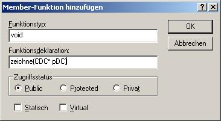

- Zuerst wird wie gesagt eine neue Klasse mit dem Namen ZeichenObjekt gebraucht, von der ich dann alle anderen (Linie, Rechteck, Ellipse) ableiten kann.
- Nun werden noch 2 weitere Klassen für Rechteck und Ellipse gebraucht. Diese müssen von der Klasse ZeichenObjekt abgeleitet werden, nicht von CObject.
Leider kann man die Klasse für die Ellipse nicht Ellipse nennen, weil es diesen Namen schon gibt. Ich nehme desshalb den Namen myEllipse.
- Die Klasse Linie ist aber noch immer von CObject abgeleitet. Sie soll aber genauso wie die Klassen myEllipse und Rechteck von ZeichenObjekt abgeleitet werden.
Änderungen in der Datei Linie.h
// Linie.h: Schnittstelle für die Klasse Linie.
//
//////////////////////////////////////////////////////////////////////
#if !defined(AFX_LINIE_H__1D1B215B_847B_41F4_B837_877ABE780E17__INCLUDED_)
#define AFX_LINIE_H__1D1B215B_847B_41F4_B837_877ABE780E17__INCLUDED_
#if _MSC_VER > 1000
#pragma once
#endif // _MSC_VER > 1000
#include "ZeichenObjekt.h"
class Linie : public ZeichenObjekt
{
public:
void Serialize(CArchive &ar);
DECLARE_SERIAL(Linie)
int dicke;
COLORREF farbe;
CPoint endpunkt;
CPoint startpunkt;
Linie();
virtual ~Linie();
};
#endif // !defined(AFX_LINIE_H__1D1B215B_847B_41F4_B837_877ABE780E17__INCLUDED_)
- Die Klassen Rechteck und myEllipse benötigen nun noch Variable, um sich selber beschreiben zu können.
Gebrauchte Variable:
-> Rechteck : int x1,y1,x2,y2 oder ein CRect (hab ich gewählt, da es weniger zu schreiben ist einer statt vier Variablen jeweils einen Wert zuzuweisen)
-> myEllipse : int x1,y1,x2,y2 oder ein CRect (hab ich gewählt)
- Jetzt brauchen wir in der Basisklasse noch die Methode zeichne.
Da die Methode nur da ist, um von den abgeleiteten Klassen überschrieben zu werden, brauchen wir keinen Code für sie zu implementieren.
- Die Methode (muss) nun in allen von der Klasse abgeleiteten Klassen überschrieben werden:
Sie braucht dort nicht virtual sein.

- In diese Methoden muss nun der Code zum Zeichnen verlagert werden.
Beispiel für die Linie
void Linie::zeichne(CDC *pDC)
{
CPen *oldpen,*pen;
pen = new CPen(PS_SOLID,dicke,farbe);
oldpen = pDC->SelectObject(pen);
pDC->MoveTo(startpunkt);
pDC->LineTo(endpunkt);
pDC->SelectObject(oldpen);
delete pen;
}
- Um später die neuen Objekte auch serialisieren zu können, muss in den 3 Klassen, die neu hinzugekommen sind, noch eine Implementierung der Methode Serialize hinzugefügt werden.
Beispiel für die Klasse myEllipse:
void myEllipse::Serialize(CArchive &ar)
{
if (ar.IsStoring())
{
ar << rect;
}else
{
ar >> rect;
}
}
Es müssen auch in allen der Klassen ZeichenObjekt, Rechteck und myEllipse die Makros DECLARE_SERIAL und IMPLEMENT_SERIAL eingefügt werden. In der Klasse Linie muss IMPLEMENT_SERIAL abgeändert werden, weil sie nun nicht mehr von CObject sondern von ZeichenObjekt abgeleitet ist.
- Nun möchte sich der spätere Benutzer sicher auch aussuchen wollen, was er jetzt zeichnen möchte. Dazu erstelle ich einfach 3 Buttons in der Symbolleiste. Jeweils einen für Linie, Rechteck, und Ellipse.
- Jetzt wird noch eine Variable gebraucht, in der man sich merkt, was der Benutzer gerade zeichnen will. Am Besten ist es sie in der Klasse CZeichnerView zu erstellen.
- Es fehlen noch Handler, die auf die Buttons reagieren.
Definitionen in CZeichnerView.h
#define Z_LINIE 1
#define Z_RECHTECK 2
#define Z_ELLIPSE 3
Beispiel für Handler:
void CZeichnerView::OnLinie()
{
// Z_LINIE defininiert in CZeichnerView.h
aktuellesObjekt = Z_LINIE;
}
void CZeichnerView::OnRechteck()
{
aktuellesObjekt = Z_RECHTECK;
}
void CZeichnerView::OnEllipse()
{
aktuellesObjekt = Z_ELLIPSE;
}
- Nun muss nur noch OnDraw geändert werden.
Es müssen noch einige Dateien in CZeichnerView.cpp includiert werden:
#include "myEllipse.h"
#include "Rechteck.h"
#include "ZeichenObjekt.h"
Änderung des Konstruktors für CZeichnerView:
CZeichnerView::CZeichnerView()
{
// ZU ERLEDIGEN: Hier Code zur Konstruktion einfügen,
startpunkt = CPoint(0,0);
endpunkt = CPoint(0,0);
strichdicke = 1;
// auf Schwarz setzen
strichfarbe = RGB(0,0,0);
aktuellesObjekt = Z_LINIE;
}
Neue OnDraw:
void CZeichnerView::OnDraw(CDC* pDC)
{
CZeichnerDoc* pDoc = GetDocument();
ASSERT_VALID(pDoc);
POSITION pos;
ZeichenObjekt *z;
pos = pDoc->ObjektListe.GetHeadPosition();
while (pos != NULL)
{
// ZeichenObjekt holen und in Zeiger auf ZeichenObjekt konvertieren
z = (ZeichenObjekt*) pDoc->ObjektListe.GetNext(pos);
// ZeichenObjekt sich selber zeichnen lassen
z->zeichne(pDC);
}
// ZU ERLEDIGEN: Hier Code zum Zeichnen der ursprünglichen Daten hinzufügen
}
- Fertig